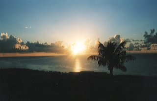

KH2K/AH0 Saipan Is.1998

【Back Issues Oct.98】
31.Oct.98
(12:00-b) VK-TV 01:50 46.172 -- VK4KK 03:21 50.110 CW V63AO 04:18 50.120 SSB VK8VF 11:35 50.056 CW Beacon ◎ VK-TV(46.172MHz)が弱く聞こえていたが、6mではVK4が短時間確認できただけ。 コンデション は再び後退、日中はノイズの多い一日。 夜になってVK8のビーコンが入感してきたが、信号は弱い。30.Oct.98
(13:30-b) ZL-TV 01:20 45.250 -- VK-TV 01:45 46.172/240 -- (ZP5SNA 01:16 50.110 -- QSO with JR6GV) (PY2AA/B 01:30 50.060 CW Report by JR6GV) (ZP5AA/B 02:02 50.024 CW 〃 〃 ) VK4GPS 02:40 50.110/140 SSB VK3ALM/4 02:42 50.110 SSB VK4WTN 02:47 50.120 SSB VK4RGG 02:47 50.058 CW Beacon FK8CA 02:49 50.115 CW FK8VHN 03:06 50.110/130 SSB VK4KK 03:23 50.107 CW VK4PU 03:45 50.150 SSB V73AT 06:28 50.110 CW/SSB V63AO 07:10 50.120 SSB VK8AH 12:01 50.110 CW VK8KTC 12:06 50.110/130 SSB VK8VF 12:07 50.056 CW Beacon ◎ 昨日落ち込んだコンデションも今日は持ち直した。 沖縄では連日の南米入感がリポートされ ていたが、この時間、東日本では国内のスキャッターも聞こえなかった。 午後から強力なVK4に 続いて、FK8→V73→V63とコンデションは動いた。29.Oct.98
(12:00-d) VK-TV 02:45 46.172 -- ◎ 01:23z頃から沖縄でZP6CW、PY2CDS、PY5CCなどとQSOしているが、この時間には1エリア(本土) では信号の"カケラ"も聞こえなかった。 このコンデションは午後も続き、夜までVKのTVも聞こ えない"静かな"6mバンドだった。 沖縄からの東西のパスがFBなのは今に始まったことではないが、高緯度の本土とはあまりにも違 いすぎる？。 JR6GV・平良さんは、今日もZP5AA(50.024MHz)のビーコンを01:10zから約5時間も 受信したとのこと。28.Oct.98
(08:00-b) ZL-TV 01:15- 45.240/250/260 VK-TV 02:15- 46.172/240 FK8CA 02:51 50.110/104 CW FK8VHN 03:02 50.110/130 SSB KH7R 03:24 50.120 SSB V73AT 05:28 50.110 CW V73SIX 05:31 50.014 CW Beacon VK8RAS 05:45 50.047 CW Beacon V63AO 06:27 50.120 SSB *V73AT 07:23 50.110/130 SSB VK2YHN 07:27 50.130 SSB ◎ FK8CAの入感から始まった今日の午後のコンデションは、03:20z頃からのKH7Rの入感へと続 いた。 KH7Rの信号は前回の時より弱く、1エリアでは10分程でフェードアウトした。 V73ATが入感しても"確認出来ない"V73SIXのビーコンが今日は珍しく聞こえていた。27.Oct.98
(13:00-c) VK-TV 02:20- 46.172/240 ZL-TV 02:25- 46.240/250/260 FK8VHN 02:59 50.120 SSB VK4KK 03:40 50.110 SSB (PY2XB 04:08-14 50.109 CW QSO with JR6GV/JS6CDB) VK4GPS 04:16 50.100 CW VK2YHN 04:28 50.110 SSB VK4CWJ 04:30 50.120 SSB *FK8VHN 04:55 50.120/130 SSB FK8CA 05:12 50.114/140 CW VK8RAS 05:40 50.047 CW Beacon BG7OH 07:20 50.120 SSB VR2IL 09:03 50.120 SSB N7ET/DU7 12:35 50.110 CW ◎ 午前中から46/45MHz帯のVK/ZLのTVが入感、コンデションが上昇している感じ。 03:00z少し 前から強力なFK8VHN入感してJA'sのパイルアップを受けていた。 信号は強力だったが、FK8VHN は終始QRNに悩まされていて、弱い局をコピーするのに苦労していた。 こんな中、相手が強か ったためなのか、わざわざ"QRP"で呼んでいるJA局が目立ったが、相手の状況を考えて呼ばない と無駄な時間を費やすばかりでなく、せっかくのオープンを潰してしまう。 FK8VHNはQRNを理 由に、05:37zにQRTした。 FKのオープンの最中、沖縄でブラジルのPY2XBとQSOしていたが、残念ながら本土ではPY2の信 号は聞こえなかった。 午後のコンデションは、FK→VK→BD7→VR2と移り、09:00z過ぎに一旦"終息"。 夜は弱いDU7。26.Oct.98
(09:00-c) VK-TV 02:00- 46.172 -- VK4AFL 03:20 50.110 SSB ZL-TV 03:00 45.260 -- VK8RAS 03:28 50.047 CW Beacon *VK8RAS 06:10 50.047 CW ◎ コンデションの落ち込んでいたVK方面も、今日はVK-TVに引き続いて弱いながらもVK4/8が入 感していた。 とくにVK8RASのビーコンは長い時間入感していたが、このエリアのアクティビィ ティがないので"局"は聞こえてこない。 ZL3→K6、KH7→VK8のオープンがリポートされているが、 JAでは、03:00z前後に短時間45MHzのZL-TVが弱く入感しただけ。25.Oct.98
(09:00-a) VK-TV 02:50 46.172/240 -- V73A7 04:10 50.110/105 CW N7ET/DU7 06:58 50.110/104 CW ◎ 午前中から46MHz帯のVK-TVが上昇していたが、50MHz帯のVKは聞こえてこなかった。 近場のV73AT、N7ET/DU7は聞こえてくるがコンデションは長続きしない。 沖縄では6mで良く入感しているA45ZNが、夕方、28.400MHzのSSBでコンテストに参加していた。 信号の強さから言っても6mで聞こえそうなコンデションではなかった。24.Oct.98
(12:00-b) V63AO 04:45 50.120 SSB ◎ ここのところ日中、夜間共にVKの入感も落ち込んだままだが、例年本格的な入感は11月にある のでこのまま終わることはない。 A35SO & A35ZLがQRTして南太平洋方面も少し"淋しく"なってい る。 YJ8、3D2、VK9/L、FK8、A35と、出れば聞こえてくるエリアなので、今後のアクティビティ に期待したい。 まだ先のはなしだが、VK4JSRによるVK9L(VK4JSR=/VK9L・ Lord Howe Is.)が11月 18-22日に予定されている。 ここはコンデション的には問題ないので期待できる。 11月中旬にシンガポールで行われる「Sea net Convention」の特別局から6mの運用が"噂"されてい るが、詳細は未定。 ◎ コンテスターであるKH7Rは「CQ WW DX CONTEST」に参加しているため、週末の6mへのQRVは期待 出来ない？。23.Oct.98
(02:00-a) ◎ 朝から南西方向からの48.250MHzのTVが振り切って入感している。 ここ2、3日は同じ様な入感 状態が続いているが、N7ET/DU7が午前中に聞こえることもあり、コンデションに変化が出てきた。 ◎ 昨日は入感しなかったKH6/7だが、オープンを期待して多くの局がスタンバイしている"気配"が 感じられた。 沖縄よりも緯度の高い"本土"からは、F2による伝搬では、南北の関係にあるパスに 比べ東西に位置する場所とのQSOはコンデションがもう少し上昇しないと難しい。 ハワイは距離的にも手頃で、比較的オープンに恵まれているエンティティーなのだが、このサイク ルではいま一つ立ち上がりが遅い。 過去の入感から見ても12:00JST(03:00z)前後にオープンするこ とが多い。 サイクルの最盛期になると、08:00JST頃から午後まで入感してくることもあるが、そ の様なコンデションになるには、南米が入感する様になってからかも知れない。22.Oct.98
(09:00-b) V73AT 03:20 50.110/105 CW V63AO 04:37 50.120 SSB VK4KK 05:53 50.110/150 CW/SSB *V63AO 05:55 50.120 SSB *V73AT 07:05 50.110 CW ◎ 期待されたKH6/7だったが、6mの"定説通り"二日連続のオープンは無かった。 それでも午後の早 い時間帯からV73AT、V63AOが入感、太平洋方面の近場のコンデションは上昇している感じだった。 06:00z近くなってVK4が入感してきたが信号は弱い。 午前中から南西方向の48MHz帯(48.240/250/260)と西方向の49.750MHzのTVが強力に入感、50MHz帯ま でバズが"上昇"していたが、この方面からのDXの入感は無かった。 ◎ 今週末の「CQ WW DX CONTEST」のためブルネイからQRVしているV8A(OP.加藤さん)からの情報では、 ローカルのTVが終了する夜間に6m(50.110MHz)にもQRVしたいと。 QSLはJH7FQK。21.Oct.98
(13:00) VK4BAF 03:18 50.108 SSB VK4KJL 03:22 50.150 SSB VK4AFL 03:23 50.110/150 SSB QSO with HL1LTC VK4GPS 03:24 50.105 SSB VK4RGG 03:32 50.058 CW Beacon VK4KK 03:33 50.110 SSB VK4APG 03:34 50.110 SSB KH7R 03:38 50.110/130 SSB GL=BL01 ex KH6HH Ken (KH6HME 03:47 50.062 CW Beacon in to JA2) (KH6SX 04:00 50.110 CW QSO with JR6's) ZL-TV 05:25 45.250 --- V63AO 06:29 50.120 SSB ◎ ようやく東日本でもハワイ(KH6/7)の入感があった。 午後から強力に入感してきたVK4'sに混じっ て、03:36z頃から50.110MHzのSSBでKH7R(Ken)が聞こえてきた。 これより前、KH7RがJA6YAG(沖縄)、 JA6YBR(大分)のビーコンの入感をクラスターにリポートしており(03:31z)、少し前から沖縄、九州が オープンしていたもよう。 VKに向いていたアンテナを東に回した途端、KH7RはRS59で強力に入感、こちらからのコールに対 して、KH7Rは50.130MHzへのQSYを指示して応答してきた。 今サイクルのKH6/7は、去る10月8日のJR6での入感に次ぐ二度目のオープンだった。 今日のKH7Rの信号は最初の5、6分は強力だったが、その後は、QSBを伴ってS5-6程度で入感していた。 04:00z頃、50.110MHzのCWでJR6'sがKH6SX(ex AH6LR)とQSOを始めたが、1エリアではこの局は確認 出来なかった。 KH7Rは50.110MHzと50.130MHzを行き来しながら"CQ"を出していたが、04:30z頃にはVK'sと共に聞こ えなくなった。 この日QSOしたJAは、1と2エリアの局が多かったが、コンデションがよかったと言 うよりも、この時間帯に聞いていた局が多かっただけと思われる。 KH7Rのリポートによると、JAとのオープンと平行して、ZP5AA(50.023MHz)、PY2SFY(50.0095MHz)な どのビーコンが入感していたとのこと。 JAでは南米がオープンするほどのコンデションではなかっ たが、ZP5AAの周波数にはJA1ZYK(千葉)のビーコン(?)が出ており、今後のオープン時にはこれが少な からず影響を与えそう。20.Oct.98
(14:30) 9M-TV? 0030 48.250/260 VK4JH 11:33 50.110 SSB VK8VF 11:34 50.056 CW Beacon VK4RIK 11:50 52.445 CW Beacon N7ET/DU7 14:03 50.110 CW ◎ 午前中、弱い48MHz帯のTVを確認！。一瞬「ロングパス？」とアンテナを回したところ、ビーム 方向は南西の東南アジア方面からのもの！。 カナダから来日中のVE7ASJとのスケジュールで外出し たため、この後のコンデションは把握できなかったが、帰宅後の夕方の6mバンドは完全に"死んで" いた。 11:00z頃からVK4/8が入感しはじめ、同時にJA8、7方向の国内もオープン。 青森県三沢市か らQRVしている7J7ACX(KG6JDX)、7J1AEJ/7(KG6DX)の両"Joe"が、1エリアにも入感していた。19.Oct.98
(13:00) VK-TV 00:45- 46.172/240 VK4GPS 01:40 50.110/105 CW VK4RGG 01:40 50.058 CW Beacon VK4KJL 01:41 50.125 SSB VK4KK 01:46 50.110 CW VK-TV 07:00- 46.172/240 S9+++ VK8RAS 07:20 50.047 CW Beacon HL1LTC 07:38 50.110 CW SSW SC VK4BLK 07:47 50.110/115 SSB VK2BA 08:01 50.105/122 SSB VK4YJB 08:05 50.145 SSB VK4EK 08:07 50.145 SSB VK4WQ 08:10 50.120 SSB *VK4KK 08:24 50.110/140 SSB also VK4GPS/VK4KJL/VK4RGG VK4PU 08:31 50.150 SSB VK4AFL 08:35 50.145 SSB VK4BRG 08:36 50.077 CW Beacon VK4BIT 08:48 50.160 SSB VK4JH 08:57 50.110 CW YB0ARA/9 11:38 50.110 CW VK4RIK 11:57 52.445 CW Beacon VK8GF 12:12 50.110/130 SSB N7ET/DU7 12:43 50.104 CW ◎ 今日のVK4は午前と午後の2度のオープン。 とくにイブニングTEに変わる手前の午後(07:00z頃) のオープンでは強力なS9+の信号がバンドに並んだ。 夜間はVK8が強力。18.Oct.98
(13:00) VK-TV 02:40- 46.172/240 VK4ABW 05:49 50.110 SSB VK8RAS 08:45 50.047 CW Beacon VK4GPS 08:53 50.110/105 CW VK4BLK 09:05 50.110/130 SSB VK4JSR 09:08 50.110/150 SSB VK4APN 09:32 50.110 SSB/CW VK8MS 09:44 50.110/145 SSB QSO with V73AT、KH2JU VK8VF 12:00 50.056 CW Beacon ◎ 衰えて日本上陸したとはいえ、元は超大型だった台風10号は、関東地方でも早朝からかなり強い 風を伴って大荒れだった。 晴天となった午後も時折強風が吹いて、クランクダウンしたアンテナを 上げるタイミングがつかめない。 9号、10号とたて続けに本土を横切ってアンテナに被害を与えた 今年の台風だが、発生数が少ない割には上陸した数が多く、ハムには"厄年"となってしまった。 夜間のVK4's、VK8のコンデションはFB。 ただし、VK'sのCQに"Out side JA"の指定が多くなっている ので、CQが聞こえたからといってすぐ"飛びつく"のはやめよう。17.Oct.98
(10:00) VK-TV 03:00 46.172 V63AO 06:15 50.120 SSB (9M2NK 07:10 50.107 CW JH0MHE) ◎ 西日本は台風10号の接近でアクティビティも上がらない土曜日になったが、日中のコンデション も低調で、南太平洋方面では、V63AO・西村さんが聞こえただけ。 サイパンから移動運用中のKH0/N3JJ(Op.JA3ART)、KH0/JN1WTKの50.110MHzでの"CQ Beacon"は、 残念ながら入感していない。16.Oct.98
(13:00) VK-TV 00:50- 46.172 FK8CA 02:50 50.110 CW VK4BLK 03:06 50.110/125 SSB VK4KK 03:40 50.110 SSB VK5AYD 03:48 50.110/120 SSB VK4GPS 03:58 50.110 CW VK8RAS 03:59 50.047 CW Beacon VK4BRG 03:59 50.077 CW Beacon VK8MS 11:10 50.110/140 SSB VK8VF 11:25 50.056 CW Beacon VK4RIK 11:26 52.445 CW Beacon VK4ABW 11:34 50.110 SSB KH2D 11:54 50.102 CW VK8GF 11:59 50.120 SSB VK4APN 12:33 50.110 CW N7ET/DU7 12:58 50.117 SSB ◎ YAESUの新鋭機、FT-847をお使いになっている局も多いことと思いますが、オールバンド機とし て出てくる最近のRIGは、どうしても"6m向き"に設計されていないことに不満が出てきます。 先輩格のFT-920もそうだったように、このFT-847も49MHz帯以下の周波数が受信出来ません。 6mでDXを狙っている局には不可欠な、45MHz帯のZL-TV、46MHz帯のVK-TVなど、バンドオープンの パイロットとなる電波が受信出来ないのは"致命的"です。 後続の製品が出てきても、いまだにFT-655が"トップクラス"の6mマンに愛用されているのは、6mで 使いやすく造られているためでしょう。 当然、FT-655は50MHz以下もHF帯まで連続受信可能にな っています。 FT-920の改造方法は以前にこのコーナーで紹介しました(1997年9月17日)。 こんどのFT-847も簡単な改造で受信範囲が大幅に変更出来ますので、興味のある方は一度試して 見て下さい。 この改造でFT-847の受信範囲は、100KHz−76MHz、108−174MHz、420−512MHzに広がります。 [ FT-847改造方法 ] (1) FT-847の本体底のAFコントロール基板(ユニット)にあるバックアップ電池横のチップ群1-4の 内、4の抵抗を取る。 (2) ケースを元の状態に組み立てて、メインダイアル横のFASTとLOCKのボタンを押しながら電源を 入れる。15.Oct.98
(08:00) ZL-TV 00:30-01:45 VK-TV 01:00- 46.172 VK4GPS 03:23 50.110 SSB/CW A35SO 03:28 50.110 CW VK5AYD 03:41 50.110/120 SSB VK4JH 03:58 50.110 CW VK6AOM 07:40 50.110/120 CW/SSB ◎ 昨夜の南太平洋方面のコンデションはFBで、日中から聞こえていたFK8CAをはじめ、FK8VHM、 A35SOなどが良好に聞こえていた。 東日本からの南西方向のパスは、いま一つ上昇しないが、 沖縄ではVQ9(Chagos Is.)とのQSOに成功している。 これは、今サイクル初のVQ9とのQSOで、 5R8に次ぐ二つ目の"アフリカ"。14.Oct.98
(10:00) ZL-TV 00:50- 45.24/25/26 VK-TV 01:00- 46.172/240 VK4JSR 03:12 50.110/130 SSB VK2YHN 03:21 50.110/160 SSB VK4KK 03:22 50.070 CW Beacon(test) VK4RGG 03:23 50.057 CW Beacon VK4LR 03:39 50.110 SSB VK4GPS 03:42 50.110 CW VK4KK 03:47 50.110 SSB VK4BLK 03:58 50.110/140 SSB VK4KR 04:05 50.110 SSB FK8CA 04:15 50.110 CW VK4DO 04:24 50.110/125 SSB QSO with KH7U VK4JH 05:05 50.110 SSB *VK4GPS 05:43 50.110 SSB VK4JUD 07:09 50.110/145 SSB VK3DQJ 07:23 50.110/125 SSB FK8CA 08:00 50.110 CW VK4APG 08:04 50.110 CW A35SO 08:09 50.110/120 CW/SSB VK4BKM 08:14 50.110 SSB VK4ABW 08:33 50.110/150 SSB FK8VHM 09:22 50.100 CW V63AO 09:39 50.130 SSB VK4TZL 10:30 50.110 SSB (VQ9QM 13:33 50.110 CW QSO with JR6VSP/JS6CDB/7J6CCU) ◎ 午前中からZL-TV/VK-TVが強力に入感して期待を持たせたが、入感したのはVK2、4'sが主力。 いつも弱いFK8CAも今日はピークでRST599まで上がった。 VK4からはJAと同時にKH7がオープン していたが、この時間帯はJAからの"横のパス"はない。 08:00zから再び50.110MHzのCWでFK8CAがQRVしてきたが、CQに応答するJAは少なく直ぐQRT。 入れ替わりにこの周波数でA35SOが出てきた。 信号は強く、SSBに替わった直後からJA'sのパ イルアップとなった。 今日の50.110MHzはFK、A35、VK3、VK4が同時に入感する混雑ぶり。13.Oct.98
(12:00) VK4BLK 04:08 50.110 CW VK4JH 04:30 50.130 SSB VK4DB 06:08 50.110 CW/SSB V63AO 07:00 50.120 SSB YB0ARA/9 10:10 50.110 CW VK8VF 11:00 50.056 CW Beacon VK8RAS 11:05 50.047 CW Beacon VK4JUD 11:12 50.113 SSB ◎ ここのところ夜間のDX入感が盛んになっている。 イブニングタイプのTEに切り替わった直 後のA35SOやVKが強力に入感、その後の9M2/YC(インドネシア)の入感までパスが伸びた。 磁気赤道直下のDU/V63も安定に入感していたが、昨夜のBG7/VR2'sは久々に強力だった。 ◎ * アマチュアバンドの使用区分と50MHz帯のRTTY運用 * 無線局運用規則第258条の2に基づく郵政省告示「アマチュア業務に使用する電波の形式及び 周波数の使用区別」では、RTTY(AMTORやPACTORなどを含む)やパケット通信の運用は、「狭帯域 デジタル」の区分内で行うことになっています。 50MHz帯のアマチュアバンド使用区分では、 「狭帯域デジタル」の周波数区別は、50.90-51.00MHzとなっています。 すなわち、50MHz帯 でのRTTYの運用は、この周波数で行うことになっているのです。 ただし、50MHz帯では特例と して、50.00MHzから50.10MHzまでの周波数は、外国のアマチュア局との狭帯域デジタル通信に も使用することができるようになっています。 最近ではA35SOやVKの局がRTTYを運用していま すが、これらの外国局とのQSOでは、HF帯と同様に50.08-50.09MHzの間が使われています。 この周波数はあくまでも"外国局のCQに応答する"場合にのみ使用できるのであって、JA局は たとえ外国局を相手にしたものであっても"CQを出す"ことは出来ません。 当然、JA局同士の QSOは、この周波数では行えませんので注意が必要です。12.Oct.98
(13:00) A35SO 04:27 50.110 CW/SSB A35ZL 05:27 50.110 CW V63AO 05:40 50.120 SSB VK8RAS 08:34 50.047 CW Beacon *A35SO 09:15 50.110/130 CW/SSB Evening TE *V63AO 09:24 50.120 SSB QSO with A35SO & KH7R A35SO 10:07 50.090 RTTY DU100GF 10:12 50.115 SSB VK4JH 10:16 50.110 CW BG7OH 10:28 50.120 SSB VR98LC 10:30 50.101 CW VR2ZNY 10:34 50.135 SSB VR2ZDH 10:38 50.130 SSB VR2IL 10:39 50.140 SSB VR2XMT 10:39 50.150 SSB VR2MQ 10:41 50.190 SSB YC0CBI 12:55 50.110 SSB ◎ 今日も昨日と同様、A35SOの入感から始まった。 昨日ほどのパイルにもならず散発的にQSOして いたが、一時間ほどしてオペレーターがA35ZLに替わった。 コールサインが変わったのに"気が付い た"局が呼び出したが、 この時間にはコンデションも落ちて、CWの信号はかなり聞き取り難いものに なっていた。 イブニングタイプTEで入感してきたA35SOは強力だった。 A35SO/A35ZLは、あと1週間 Tonga Is.に滞在する。 夜間のVR2'sは全てRS59+の大オープン！。11.Oct.98
(13:00) A35SO 04:08 50.110/120 SSB/CW (50.120 QSX 5-10UP) V63AO 04:43 50.120/125 SSB FK8CA 05:09 50.135 CW VK5AYD 06:27 50.110/120 SSB VK8RAS 06:29 50.047 CW Beacon *V63AO 06:44 50.120 SSB VK4JH 07:05 50.110 CW HL1LTC 07:49 50.110 CW/SSB N7ET/DU7 08:47 50.110/120 SSB VK4ABW 10:10 50.110 CW VK4JH 10:20 50.110 CW/SSB VK8MS 12:32 50.110 SSB VK8VF 12:33 50.057 CW Beacon VK8RAS 12:34 50.047 CW Beacon ◎ A35SOは信号も強く、いつものようにスプリットによる運用でさばいていたので、スムーズな QSOが行われていた。 途中でV63AOが同じ周波数に出てきたが、これは直ぐにQSY。 今日の50MHzは南太平洋方向からのノイズレベルが高く、A35SOの後に聞こえてきたFK8CAの弱いCW の信号には、かなり無理をして呼んでいた局もいたようで、何度も応答してきているのに"答えな い"局が目立った。10.Oct.98
(11:00) V63AO 05:35 50.120 SSB VK6HK 07:10 50.140 SSB VK6ZWZ 07:19 50.160 SSB VK6RO 07:24 50.110 CW DU100GF 09:09 50.115 SSB VK4JH 11:33 50.110 CW ◎ 昨夜から始まったコンテストのスプリアスに"惑わされる"一日だった。 VK'sのビーコンの周 波数は完全にマスクされた。09.Oct.98
(10:00) VK6AOM 06:47 50.125 SSB VK6AO 06:49 50.130 SSB VR98LC 07:16 50.110 CW HL1LTC 07:49 50.110 CW VR2IL 09:08 50.110/130 SSB VR2SIX 09:10 50.075 CW Beacon VR2ZLP 09:11 50.120 SSB VK6PA 09:20 50.130 SSB ◎ 03:00z頃からA35SOがリポートされていたが、オープンは西日本だけで、1エリアではこの時間 には聞こえなかった。 ジャコビニ流星群の極大日となった10月9日の早朝には、HR(1時間数)が50 以上を数え(レーダー観測では300を超えた)、今年のジャコビニは活発だったと報告されている。 49.750MHzのTVのバズが久しぶりに強力だったのは、流星雨でEs層が刺激されて、近場の伝搬状態 が良くなったためとも思われる。 反対に昨日あれほど強く入感していたZL-TVは、今日は"かけら" も無かった。08.Oct.98
(11:00) (KH7R 01:11 50.110 SSB QSO with JR6HI) VK4APG 03:05 50.120 SSB VK4KK 03:09 50.110/130 SSB VK4RGG 03:12 50.058 CW Beacon VK4BLK 03:20 50.110/130 CW/SSB VK2DN 03:41 50.107 CW VK2QF 03:51 50.110 CW VK5AYD 03:53 50.110/120 SSB ZL2TPY 04:50 50.110/107 SSB (FK8CA 04:55 50.150 CW) VK8RAS 05:14 50.047 CW Beacon ZL2TPY 05:58 50.108 CW V63AO 10:00 50.120 SSB A35SO 10:09 50.110 SSB ◎ 午前中から45MHz帯(45.240/250/260MHz)のZL-TVが強力に入感。 28.885MHzの呼びかけにZL2KT が応答してきて、ZLの各局は、この日はW(北米)本土からも入感(TVの)リポートがあったので、そ ちらにアンテナを向けているとのこと。 さっそくJAにもアンテナを向けてくれたが、この時点で はZLからの入感はなかった。 ZLが入感してきたのは、03:00z頃から入感してきたVK'sが一段落し た後だった。 ZLの電波はJA4、6など西日本ではRS59で強かったようだが、東日本では2エリアで RS55、1エリアでは信号が確認出来る程度だった。 06:00z頃に再びZL2TPYの50.108MHzのCWの"CQ Beacon"が短時間ながら上昇、1エリアからもQSO出来 た。 午前中にZL-TVが強力に入感していた時間帯に、ハワイのKH7Rは沖縄のJR6HIとRS59でQSO(01:11z) している。 このQSOは今サイクル初のJA-KH6/7のQSOになる。07.Oct.98
(11:00) VK4BRG 04:00 50.077 CW Beacon VK4BLK 04:19 50.110 SSB V63AO 04:45 50.120 SSB VK4JH 09:25 50.110 CW/SSB *V63AO 09:35 50.120 SSB VK8RAS 09:40 50.077 CW Beacon VK8VF 09:41 50.057 CW Beacon VK6PA 09:52 50.110 SSB "ZS1? CQ AFRICA !!??" VK4ABW 09:53 50.110/150 SSB YB0ARA/9 11:33 50.110 SSB ◎ 日中のVK4は不安定なオープンだった。 昨日の夕方に聞こえていたA35SOは、今日は14MHz帯の RTTYで出ていたが、6mでは確認されていない。 昨夜は、夜間の南西のパスが良く、6mの新局、YC1EHRがJAのパイルを受けていた。 エリア指定 でJAをさばいていたが、1エリアから始まるエリア指定では、コンデションが変わってしまい、東日 本の局には不利。 案の定、有利な6エリアを先にさばいた後の7、8エリアはもちろん、0エリアか らも呼べる局はいなかった。 ◎ 「KH2K/AH0 運用」と順番が逆になりましたが「父島からの運用」を掲載しました。06.Oct.98
(13:00) VK4BRG 03:25 50.077 CW Beacon VK4RGG 03:25 50.058 CW Beacon VK4BLK 03:26 50.130 SSB VK4DMI 03:30 50.110/160 SSB VK4APG 03:35 50.150 SSB VK4KJL 03:44 50.110/150 SSB V73AT 05:26 50.110/120 SSB V63AO 07:05 50.120 SSB A35SO 09:10 50.110/120 CW/SSB YB0ARA/9 10:10 50.110 CW VK4TZL 10:14 50.110 SSB P29KFS 11:30 50.110 SSB VK8VF 11:40 50.057 CW Beacon VK8RAS 11:41 50.047 CW Beacon N7ET/DU7 12:34 50.104 CW VK4JH 12:49 50.110 CW YC1EHR 13:09 50.125 SSB ◎ 日中は、03:00z前後からのVK4の入感に始まり、V73→V63へ移動するコンデションが最近の"定番" となってきた。 KH0やKH2、それに最近入感しているA35など、この前後にアクティビティのあるエン ティティーは入感してくるので、南太平洋方面のコンデションはかなり広範囲にオープンしていると 思われる。 毎度のことながら、サイクルの立ち上がりはいまひとつアクティビティーが無いので、 コンデションの上昇が目立たないのかも知れない。 JR6と南米(PY/ZP)間のパスや、A35SO(トンガ)→XE(メキシコ)がリポートされていきているように、 太平洋間のパスは、確実に良くなってきている。 28MHz帯では毎朝のように、北米、南米が入感し だした。 北米はまだ無理だが、秋の南米に期待！。05.Oct.98
(10:00) V63AO 05:53 50.120 SSB P29KFS 10:24 50.110 SSB ◎ 午前中に46.172MHzのVK-TVが入感してきたが、午後には急激に低下してしまった。 昨日の午後に 比べ、コンデションは落ち込んでいる。 その中にあって、V63AOだけは強力に入感していた。 KH2K/AH0(Saipan)を引き継いで、マリアナリゾートホテルで運用していたJA4KFAのグループは、5日 の朝でQRTした。04.Oct.98
(13:00) (PY2OZF 03:03-56 50.110 SSB PY's QSO with 7J6CCU.JR6VSP.JR6HI) (ZP6CW 02:45- 50.110 SSB/CW QSO with JR6's) VK4KK 03:25 50.110 SSB VK4GPS 03:31 50.110 CW A35SO 03:40 50.110/120 SSB GL=AG28 VK3ALM/4 04:47 50.110 SSB VK4JH 04:49 50.110 SSB V63AO 04:58 50.125 SSB V73AT 06:05 50.110/105 CW HL1LTC 07:43 50.110 CW *VK4GPS 09:09 50.110/120 SSB VK8KTC 11:15 50.130 SSB VK4DHF 11:23 50.145 SSB VK8VF 11:27 50.057 CW Beacon VK8RAS 11:28 50.047 CW Beacon P29KFS 12:15 50.110 SSB ◎ 6mの新局、A35SO(GL=AG-28)は03:40zに50.110MHzで"CQ JAPAN"をコールしてきた。 パイルアップ となった50.110MHzから50.120MHzにQSY、QSX 50.130-150MHzのスプリットでJAをさばいていた。 100Wに2EL HB9CVの信号は強力で、05:40z頃まで2時間ほどオープンした。 QSLはDJ4SOのHome QTH。 ◎ 10/1-10/3までKH2K/AH0を運用、4日の早朝便で帰国。 幸いに3日間ともJAとのオープンに恵まれ、 VR2を含む204局とQSO。 2日の午後にサイパン入りしたKH0/JA4KFA・野宮さんも同じ場所から6mを運 用中。 こちらもVR2を含む多くのJAとQSO出来た。 JA4KFA(野宮)、JH4RLY(難波)、AA1NY/JA4CZM(坪井)、JA4RED(篠原)の各局は、5日の昼まで滞在する。
01-03.Oct.98
(07:00) ◎この期間、KH2K/AH0(Saipan)運用のためこのコーナーの更新は休みました。
| Index | Back Issues |
|---|---|
最新情報へ戻る |